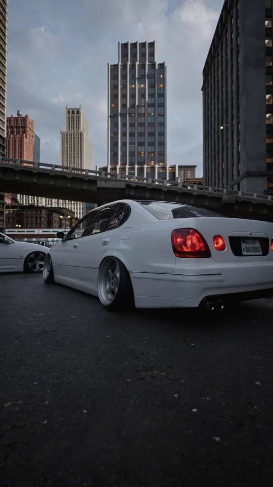
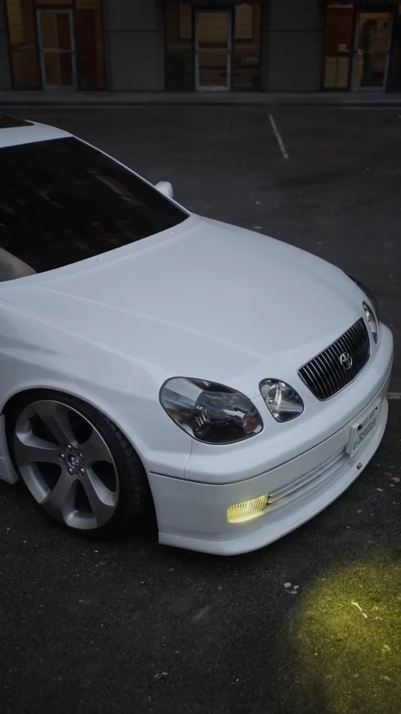
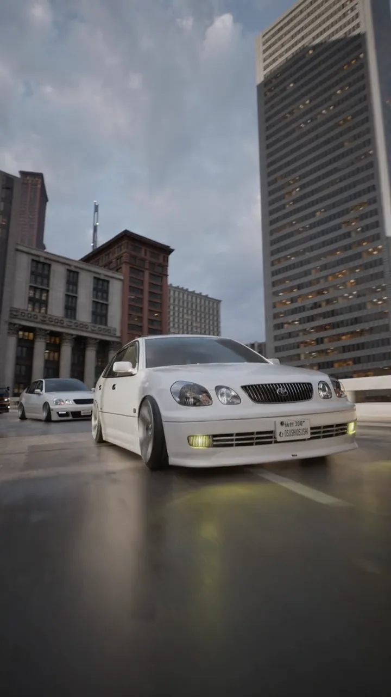

Aristo Osushi
A vertical CGI film of a low Toyota AristoВертикальный CGI-ролик с низкой Toyota Aristo
A low Toyota Aristo JZS161 on its plates under a city overpass, every shot framed for 9:16 from the startНизкая Toyota Aristo JZS161 под городской эстакадой: каждый кадр строился под 9:16 с самого начала
What I didЧто я делалModeling, animation, lightingМоделинг, анимация, свет


